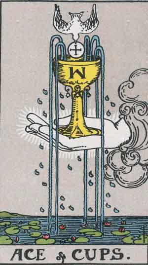

Main | Arcana | Cups | Pentacles | Swords | Wands
Ace of Cups

Upright
Creativity, Free Flow
- You may be weary of a current state. Give more, get more. Pour out your feelings.
- Consider what comes naturally to you, then let yourself do it. Be comfortable with who you are.
- You can bring happiness to others by living your life on your terms.
- Create an open and safe space for all to express themselves and how they feel.
- Kindness, attention, acceptance and emotional comfort are all forms of love with no strings attached.
- Embody love within yourself and the outer world will supply your needs.
Reversed
Release, Emotional Exhaustion
Let it all go, man! Show yourself some self-love. Really tell it all. Find constructive ways to express your feelings. Do a check-in on your emotional health. When you are thinking, what are you feeling? Knowing your feelings will help you understand your thinking. Have you responded in wrath when you could have been calm? Facing problemsn head on doesn't have to be violent. Listening to yourself, finding your right behavior, and responding in kindness is how peace gets into every step.